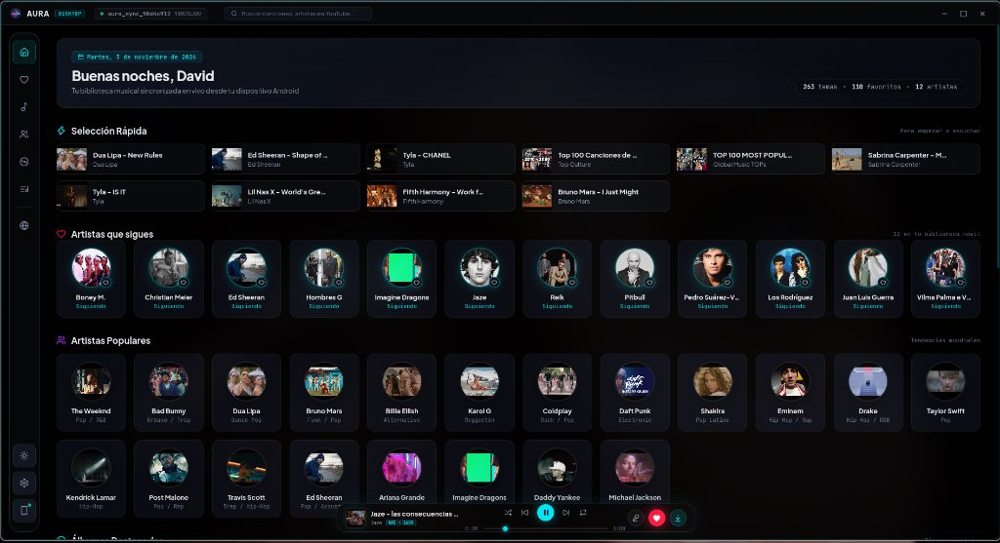
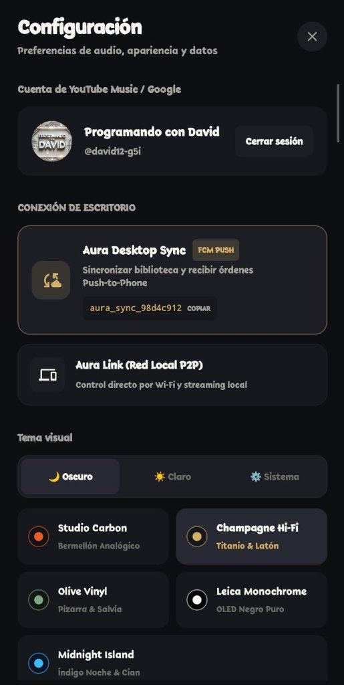

Arquitectura de audio nativa con streaming sin publicidad, procesamiento DSP de 5 bandas por hardware, letras sincronizadas línea por línea y sincronización instantánea Push-to-Phone.
aura_sync_98d4c912


Una experiencia táctil y fluida inspirada en consolas de estudio analógicas. Selecciona una vista para inspeccionar la interfaz real.
Todo lo que ves aquí está programado y activo en el código fuente de Aura Music para Android y Escritorio.
Impulsado por AndroidX Media3 1.5.1 en móvil y motor de bajo consumo en PC. Mientras escuchas una canción, Aura precarga en memoria las URL de las siguientes 3 pistas (+1, +2, +3) y la previa (-1). Si ya se estaba resolviendo una pista, se reutiliza el hilo en curso evitando llamadas duplicadas de red.
Ecualizador físico con acceso directo al DSP: 60 Hz, 230 Hz, 910 Hz, 3.6 kHz y 14 kHz. Incluye Bass Boost analógico, Virtualizer 3D y presets: Cyberpunk, Synthwave, Bass Boost, Vocal Clarity.
Compensación adaptativa de ruido exterior para auriculares. Ejecuta análisis FFT en RAM con ciclo de trabajo de 400ms cada 6s (0% de impacto en batería y sin guardar grabaciones).
Pega el enlace de cualquier playlist pública de Spotify y el módulo SpotifyImporter reconstruye la lista completa en Aura Music con carátulas y metadatos en un solo clic.
Servidor HTTP integrado en Android en el puerto 8765. Permite streaming local por Wi-Fi y control directo de transporte sin necesidad de conexión externa a internet.
Vinculación instantánea mediante tu código seguro (ej. aura_sync_98d4c912). Al marcar favoritos, crear listas o pulsar reproducir en Aura Desktop, el móvil recibe la orden en milisegundos vía Firebase Cloud Messaging.
Motor propio AudioThumbnailFetcher compatible con Scoped Storage (MediaMetadataRetriever) para mostrar carátulas reales de tus MP3/FLAC locales, con descargas directas a la carpeta pública de música.
Olvídate de exportar playlists o lidiar con archivos sincronizados a medias.
Abre Configuración y toca tu token seguro único (ej. aura_sync_98d4c912) para copiarlo al portapapeles.
Pégalo en la barra superior de Aura Desktop. El enlace queda persistido sin caducidad.
Marca un favorito o descarga una pista desde la comodidad de tu teclado: se refleja al instante en el móvil.
Aura Music elimina las fricciones que las plataformas propietarias imponen artificialmente.
| CARACTERÍSTICA | AURA MUSIC | SPOTIFY / YT MUSIC | NOCTIS / FOOBAR | OTRAS APPS LIBRES |
|---|---|---|---|---|
| Streaming sin Publicidad | ✓ 100% Libre | ✗ Suscripción de pago | ✗ Solo archivos locales | ✓ Libre |
| Latencia de Inicio (Buffering) | ✓ ~240 ms | ⚠ 1.5 - 3.0 s | ✓ 0 ms (Local) | ⚠ 2.0 - 4.5 s |
| Salto de Canción (Next / Skip) | ✓ 0 ms (Fast-Path en RAM) | ⚠ Recarga de red | ✓ Instantáneo | ⚠ Petición repetida |
| Sincronización PC ↔ Móvil | ✓ Push-to-Phone Nativo | ⚠ Ecosistema cerrado | ✗ No disponible en móvil | ✗ Inexistente |
| DSP por Hardware en Móvil | ✓ 5 Bandas + Street DSP | ⚠ EQ básico por software | ✗ No aplica en Android | ✗ Sin efectos DSP |
| Letras Sincronizadas | ✓ LRCLIB con brillo reactivo | ⚠ Limitado en cuentas free | ✓ LRCLIB / NetEase | ⚠ Desfases habituales |
| Miniaturas en Android 10+ | ✓ AudioThumbnailFetcher | ✗ Bloqueado | ✗ Solo PC | ⚠ Falla de carátulas vacías |
Aura Music es un proyecto independiente desarrollado por David Tineo. Conéctate con nosotros o apoya los servidores.
Conversa sobre mejoras, solicita funciones y comparte tus presets de ecualización.
Unirse al servidor →Descargas directas de nuevos APKs, changelogs y notificaciones de releases estables para PC.
Unirse a @AuraMusicOficial2 →Código fuente transparente. Revisa los commits, abre issues o dale una estrella al proyecto.
Explorar repositorios →¿Encontraste algún fallo o problema técnico? Envía los detalles o abre un reporte para el próximo release.
Reportar una incidencia →No. Tanto la app de Android como la de escritorio funcionan con independencia total. La sincronización es una función añadida que puedes activar cuando quieras con solo vincular el código.
Funciona en Windows 10/11 de 64 bits y en cualquier distribución moderna de Linux (mediante paquetes ejecutables nativos). Ambas versiones se generan automáticamente mediante pipelines de GitHub Actions.
Las plataformas tradicionales esperan a que el usuario presione «Siguiente» para realizar la petición HTTP de audio. Aura Music precarga silenciosamente en memoria RAM las 3 siguientes canciones de la lista, logrando una transición de cero milisegundos.
Absolutamente no. No hay rastreadores analíticos, no vendemos telemetría y el código fuente es público y auditable por cualquier usuario en GitHub.
A diferencia de los reproductores que ecualizan por software modificando los bytes de audio antes de emitirlos, Aura Music se comunica directamente con las APIs de efectos de hardware del kernel de Android (AudioFX), reduciendo el consumo de batería y evitando saturaciones.